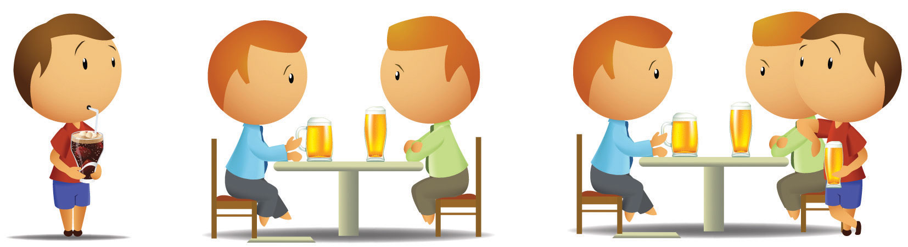

The field of social psychology is growing rapidly and is having an increasingly important influence on how we think about human behavior. Newspapers, websites, and other media frequently report the findings of social psychologists, and the results of social psychological research are influencing decisions in a wide variety of areas. Let’s begin with a short history of the field of social psychology and then turn to a review of the basic principles of the science of social psychology.
The science of social psychology began when scientists first started to systematically and formally measure the thoughts, feelings, and behaviors of human beings (Kruglanski & Stroebe, 2011).Kruglanski, A., & Stroebe, W. (2011). Handbook of the history of social psychology. Philadelphia, PA: Psychology Press. The earliest social psychology experiments on group behavior were conducted before 1900 (Triplett, 1898),Triplett, N. (1898). The dynamogenic factors in pacemaking and competition. American Journal of Psychology, 9(4), 507–533. and the first social psychology textbooks were published in 1908 (McDougall, 1908/2003; Ross, 1908/1974).McDougall, W. (2003; original published 1908). An introduction to social psychology. Mineola, NY: Dover; Ross, E. A. (1974; original published 1908). Social psychology. New York, NY: Arno Press. During the 1940s and 1950s, the social psychologists Kurt Lewin and Leon Festinger refined the experimental approach to studying behavior, creating social psychology as a rigorous scientific discipline. Lewin is sometimes known as “the father of social psychology” because he initially developed many of the important ideas of the discipline, including a focus on the dynamic interactions among people. In 1954, Festinger edited an influential book called Research Methods in the Behavioral Sciences, in which he and other social psychologists stressed the need to measure variables and to use laboratory experiments to systematically test research hypotheses about social behavior. He also noted that it might be necessary in these experiments to deceive the participants about the true nature of the research.
The field of social psychology began with pioneers such as Kurt Lewin and Leon Festinger and continues today in research labs across the world.
Source:Photo of Lewin may be found at http://commons.wikimedia.org/wiki/File:Kurt_Lewin.jpg; Photo of Festinger used with permission from AP Photo.
Social psychology was energized by researchers who attempted to understand how the German dictator Adolf Hitler could have produced such extreme obedience and horrendous behaviors in his followers during the Second World War. The studies on conformity conducted by Muzafir Sherif (1936)Sherif, M. (1936). The psychology of social norms. New York, NY: Harper & Row. and Solomon Asch (1952),Asch, S. E. (1952). Social psychology. Englewood Cliffs, NJ: Prentice-Hall. as well as those on obedience by Stanley Milgram (1974),Milgram, S. (1974). Obedience to authority: An experimental view. New York, NY: Harper & Row. showed the importance of conformity pressures in social groups and how people in authority could create obedience, even to the extent of leading people to cause severe harm to others. Philip Zimbardo, in his well-known “prison experiment” (Haney, Banks, & Zimbardo, 1973),Haney, C., Banks, C., & Zimbardo, P. (1973). Interpersonal dynamics in a simulated prison. International Journal of Criminology and Penology, 1, 69–87. found that ordinary male college students who were recruited to play the roles of guards and prisoners in a simulated prison became so involved in their assignments, and their interaction became so violent, that the study had to be terminated early (Note 1.4 "Video Clip 1"). This research again demonstrated the power of the social setting.
(click to see video)
The Stanford prison experiment conducted by Philip Zimbardo in the 1960s demonstrated the powerful role of the social situation on human behavior.
Social psychology quickly expanded to study other topics. John Darley and Bibb Latané (1968)Darley, J. M., & Latané, B. (1968). Bystander intervention in emergencies: Diffusion of responsibility. Journal of Personality and Social Psychology, 8(4, Pt. 1), 377–383. developed a model that helped explain when people do and do not help others in need, and Leonard Berkowitz (1974)Berkowitz, L. (1974). Aggression: A social psychological analysis. New York, NY: McGraw-Hill. pioneered the study of human aggression. Meanwhile, other social psychologists, including Irving Janis (1972),Janis, I. L. (1972). Victims of groupthink: A psychological study of foreign policy decisions and fiascos. Boston, MA: Houghton-Mifflin. focused on group behavior, studying why intelligent people sometimes made decisions that led to disastrous results when they worked together. Still other social psychologists, including Gordon Allport and Muzafir Sherif, focused on intergroup relations, with the goal of understanding and potentially reducing the occurrence of stereotyping, prejudice, and discrimination. Social psychologists gave their opinions in the 1954 Brown v. Board of Education Supreme Court case that helped end racial segregation in U.S. public schools, and social psychologists still frequently serve as expert witnesses on these and other topics (Fiske, Bersoff, Borgida, Deaux, & Heilman, 1991).Fiske, S. T., Bersoff, D. N., Borgida, E., Deaux, K., & Heilman, M. E. (1991). Social science research on trial: The use of sex stereotyping research in Price Waterhouse vs. Hopkins. American Psychologist, 46, 1049–1060.
The latter part of the 20th century saw an expansion of social psychology into the field of attitudes, with a particular emphasis on cognitive processes. During this time, social psychologists developed the first formal models of persuasion, with the goal of understanding how advertisers and other people could present their messages to make them most effective (Eagly & Chaiken, 1993; Hovland, Janis, & Kelley, 1963).Eagly, A. H., & Chaiken, S. (1993). The psychology of attitudes. Fort Worth, TX: Harcourt Brace Jovanovich; Hovland, C. I., Janis, I. L., & Kelley, H. H. (1963). Communication and persuasion. Oxford, England: Yale University Press. These approaches to attitudes focused on the cognitive processes that people use when evaluating messages and on the relationship between attitudes and behavior. Leon Festinger’s (1957)Festinger, L. (1957). A theory of cognitive dissonance. Evanston, IL: Row, Peterson. important cognitive dissonance theory was developed during this time and became a model for later research.
In the 1970s and 1980s, social psychology became even more cognitive in orientation as social psychologists used advances in cognitive psychology, which were themselves based largely on advances in computer technology, to inform the field (Fiske & Taylor, 2008).Fiske, S. T., & Taylor, S. E. (2008). Social cognition: From brains to culture. Boston, MA: McGraw-Hill. The focus of these researchers, including Alice Eagly, Susan Fiske, E. Tory Higgins, Richard Nisbett, Lee Ross, Shelley Taylor, and many others, was on social cognition—an understanding of how our knowledge about our social worlds develops through experience and the influence of these knowledge structures on memory, information processing, attitudes, and judgment. Furthermore, the extent to which humans’ decision making could be flawed by both cognitive and motivational processes was documented (Kahneman, Slovic, & Tversky, 1982).Kahneman, D., Slovic, P., & Tversky, A. (1982). Judgment under uncertainty: Heuristics and biases. Cambridge, England: Cambridge University Press.
The field of social psychology continues today in the research labs of Marilynn Brewer, Dan Gilbert, Alice Eagly, Mahzarin Banaji, and others.
In the 21st century, the field of social psychology has been expanding into still other areas. Examples that we will consider in this book include an interest in how social situations influence our health and happiness, the important roles of evolutionary experiences and cultures on our behavior, and the field of social neuroscienceThe study of how our social behavior both influences and is influenced by the activities of our brain.—the study of how our social behavior both influences and is influenced by the activities of our brain (Lieberman, 2010).Lieberman, M. D. (2010). Social cognitive neuroscience. In S. T. Fiske, D. T. Gilbert, & G. Lindzey (Eds.), Handbook of social psychology (5th ed., Vol. 1, pp. 143–193). Hoboken, NJ: John Wiley & Sons. Social psychologists continue to seek new ways to measure and understand social behavior, and the field continues to evolve. I cannot predict where social psychology will be directed in the future, but I have no doubt that it will still be alive and vibrant.
Social psychology is the study of the dynamic relationship between individuals and the people around them (see Figure 1.1 "The Person-Situation Interaction"). Each of us is different, and our individual characteristics, including our personality traits, desires, motivations, and emotions, have an important impact on our social behavior. But our behavior is also profoundly influenced by the social situationThe people with whom we interact every day.—the people with whom we interact every day. These people include our friends and family, our fraternity brothers or sorority sisters, our religious groups, the people we see on TV or read about or interact with on the web, as well as people we think about, remember, or even imagine.
Figure 1.1 The Person-Situation Interaction
Social psychologists believe that human behavior is determined by both a person’s characteristics and the social situation. They also believe that the social situation is frequently a stronger influence on behavior than are a person’s characteristics.
Social psychology is largely the study of the social situation. Our social situations create social influenceThe processes through which other people change our thoughts, feelings, and behaviors and through which we change theirs., the process through which other people change our thoughts, feelings, and behaviors and through which we change theirs. Maybe you can already see how the social influence provided by the members of the Heaven’s Gate cult was at work in the Hale-Bopp suicide.
Kurt Lewin formalized the joint influence of person variables and situational variables, which is known as the person-situation interaction, in an important equation:
Behavior = f (person, social situation).Lewin’s equation indicates that the behavior of a given person at any given time is a function of (depends on) both the characteristics of the person and the influence of the social situation.
In Lewin’s equation, person refers to the characteristics of the individual human being. People are born with skills that allow them to successfully interact with others in their social world. Newborns are able to recognize faces and to respond to human voices, young children learn language and develop friendships with other children, adolescents become interested in sex and are destined to fall in love, most adults marry and have children, and most people usually get along with others.
People have these particular characteristics because we have all been similarly shaped through human evolution. The genetic code that defines human beings has provided us with specialized social skills that are important to survival. Just as keen eyesight, physical strength, and resistance to disease helped our ancestors survive, so too did the tendency to engage in social behaviors. We quickly make judgments about other people, help other people who are in need, and enjoy working together in social groups because these behaviors helped our ancestors to adapt and were passed along on their genes to the next generation (Ackerman & Kenrick, 2008; Barrett & Kurzban, 2006; Pinker, 2002).Ackerman, J. M., & Kenrick, D. T. (2008). The costs of benefits: Help-refusals highlight key trade-offs of social life. Personality and Social Psychology Review, 12(2), 118–140; Barrett, H. C., & Kurzban, R. (2006). Modularity in cognition: Framing the debate. Psychological Review, 113(3), 628–647; Pinker, S. (2002). The blank slate: The modern denial of human nature. New York, NY: Penguin Putnam. Our extraordinary social skills are primarily due to our large brains and the social intelligence that they provide us with (Herrmann, Call, Hernández-Lloreda, Hare, & Tomasello, 2007).Herrmann, E., Call, J., Hernández-Lloreda, M. V., Hare, B., & Tomasello, M. (2007). Humans have evolved specialized skills of social cognition: The cultural intelligence hypothesis. Science, 317(5843), 1360–1366.
The assumption that human nature, including much of our social behavior, is determined largely by our evolutionary past is known as evolutionary adaptationThe assumption that human nature, including much of our social behavior, is determined largely by evolution. (Buss & Kenrick, 1998; Workman & Reader, 2008).Buss, D., & Kenrick, D. (1998). Evolutionary social psychology. In D. T. Gilbert, S. T. Fiske, & G. Lindzey (Eds.), Handbook of social psychology (4th ed., Vol. 2, pp. 982–1026). Boston, MA: McGraw-Hill; Workman, L., & Reader, W. (2008). Evolutionary psychology: An introduction (2nd ed.).. New York, NY: Cambridge University Press. In evolutionary theory, fitnessThe extent to which having a given characteristic helps the individual organism to survive and to reproduce at a higher rate than do other members of the species who do not have the characteristic.refers to the extent to which having a given characteristic helps the individual organism to survive and to reproduce at a higher rate than do other members of the species who do not have the characteristic. Fitter organisms pass on their genes more successfully to later generations, making the characteristics that produce fitness more likely to become part of the organisms’ nature than are characteristics that do not produce fitness. For example, it has been argued that the emotion of jealousy has survived over time in men because men who experience jealousy are more fit than men who do not. According to this idea, the experience of jealousy leads men to protect their mates and guard against rivals, which increases their reproductive success (Buss, 2000).Buss, D. M. (2000). The dangerous passion: Why jealousy is as necessary as love and sex. New York, NY: Free Press.
Although our biological makeup prepares us to be human beings, it is important to remember that our genes do not really determine who we are. Rather, genes provide us with our human characteristics, and these characteristics give us the tendency to behave in a “human” way. And yet each human being is different from every other human being.
Evolutionary adaption has provided us with two fundamental motivations that guide us and help us lead productive and effective lives. One of these motivations relates to the self—the motivation to protect and enhance the self and the people who are psychologically close to us; the other relates to the social situation—the motivation to affiliate with, accept, and be accepted by others. We will refer to these two motivations as self-concernThe motivation to protect and enhance the self and others who are close to us. and other-concernThe motivation to affiliate with, accept, and be accepted by others. respectively.
The most basic tendency of all living organisms, and the focus of the first human motivation, is the desire to protect and enhance one’s own life and the lives of the people who are close to us. Humans are motivated to find food and water, to obtain adequate shelter, and to protect themselves from danger. Doing so is necessary because we can survive only if we are able to meet these fundamental goals.
The desire to maintain and enhance the self also leads us to do the same for our relatives—those people who are genetically related to us. Human beings, like other animals, exhibit kin selectionStrategies that favor the reproductive success of one’s relatives, sometimes at a cost to the survival of the individual.—strategies that favor the reproductive success of one’s relatives, sometimes even at a cost to the individual’s own survival. According to evolutionary principles, kin selection occurs because behaviors that enhance the fitness of relatives, even if they lower the fitness of the individual himself or herself, may nevertheless increase the survival of the group as a whole.
In addition to our kin, we desire to protect, improve, and enhance the well-being of our ingroupOther people whom we view as being similar and important to us and with whom we share close social connections.: those whom we view as being similar and important to us and with whom we share close social connections, even if those people do not actually share our genes. Perhaps you remember a time when you helped friends move all their furniture into a new apartment, even when you would have preferred to be doing something more beneficial for yourself, such as studying or relaxing. You wouldn’t have helped strangers in this way, but you did it for your friends because you felt close to and cared about them. The tendency to help the people we feel close to, even if they are not related to us, is probably due in part to our evolutionary past: The people we were closest to were usually those we were related to.
Although we are primarily concerned with the survival of ourselves, our kin, and those who we feel are similar and important to us, we also desire to connect with and be accepted by other people more generally—the goal of other-concern. We live together in communities, we work together in work groups, we may worship together in religious groups, and we may play together on sports teams and through clubs. Affiliating with other people—even strangers—helps us meet a fundamental goal: that of finding a romantic partner with whom we can have children. Our connections with others also provide us with other opportunities that we would not have on our own. We can go to the grocery to buy milk or eggs, and we can hire a carpenter to build a house for us. And we ourselves do work that provides goods and services for others. This mutual cooperation is beneficial both for us and for the people around us. We also affiliate because we enjoy being with others, being part of social groups, and contributing to social discourse (Leary & Cox, 2008).Leary, M. R., & Cox, C. B. (Eds.). (2008). Belongingness motivation: A mainspring of social action. New York, NY: Guilford Press.
What the other-concern motive means is that we do not always put ourselves first. Being human also involves caring about, helping, and cooperating with other people. Although our genes are themselves “selfish” (Dawkins, 2006),Dawkins, R. (2006). The selfish gene. Oxford, England: Oxford University Press. this does not mean that individuals always are. The survival of our own genes may be improved by helping others, even those who are not related to us (Krebs, 2008; Park, Schaller, & Van Vugt, 2008).Krebs, D. L. (2008). Morality: An evolutionary account. Perspectives on Psychological Science, 3(3), 149–172; Park, J. H., Schaller, M., & Van Vugt, M. (2008). Psychology of human kin recognition: Heuristic cues, erroneous inferences, and their implications. Review of General Psychology, 12(3), 215–235. Just as birds and other animals may give out alarm calls to other animals to indicate that a predator is nearby, humans engage in altruistic behaviors in which they help others, sometimes at a potential cost to themselves.
In short, human beings behave morally toward others—they understand that it is wrong to harm other people without a strong reason for doing so, and they display compassion and even altruism toward others (Goetz, Keltner, & Simon-Thomas, 2010; Turiel, 1983).Goetz, J. L., Keltner, D., & Simon-Thomas, E. (2010). Compassion: An evolutionary analysis and empirical review. Psychological Bulletin, 136(3), 351–374; Turiel, E. (1983). The development of social knowledge: Morality and convention. Cambridge, England: Cambridge University Press. As a result, negative behaviors toward others, such as bullying, cheating, stealing, and aggression, are unusual, unexpected, and socially disapproved. Of course this does not mean that people are always friendly, helpful, and nice to each other—powerful social situations can and do create negative behaviors. But the fundamental human motivation of other-concern does mean that hostility and violence are the exception rather than the rule of human behavior.
Sometimes the goals of self-concern and other-concern go hand in hand. When we fall in love with another person, it is in part about a concern for connecting with someone else but is also about self-concern—falling in love makes us feel good about ourselves. And when we volunteer to help others who are in need, it is in part for their benefit but also for us. We feel good when we help others. At other times, however, the goals of self-concern and other-concern conflict. Imagine that you are walking across campus and you see a man with a knife threatening another person. Do you intervene, or do you turn away? In this case, your desire to help the other person (other-concern) is in direct conflict with your desire to protect yourself from the danger posed by the situation (self-concern), and you must decide which goal to put first. We will see many more examples of the motives of self-concern and other-concern, both working together and working against each other, throughout this book.
When people are asked to indicate the things that they value the most, they usually mention their social situation—that is, their relationships with other people (Baumeister & Leary, 1995; Fiske & Haslam, 1996).Baumeister, R., & Leary, M. (1995). The need to belong: Desire for interpersonal attachments as a fundamental human motivation. Psychological Bulletin, 117, 497–529; Fiske, A. P., & Haslam, N. (1996). Social cognition is thinking about relationships. Current Directions in Psychological Science, 5(5), 137–142. When we work together on a class project, volunteer at a homeless shelter, or serve on a jury in a courtroom trial, we count on others to work with us to get the job done. We develop social bonds with those people, and we expect that they will come through to help us meet our goals. The importance of others shows up in every aspect of our lives—other people teach us what we should and shouldn’t do, what we should and shouldn’t think, and even what we should and shouldn’t like and dislike.
In addition to the people with whom we are currently interacting, we are influenced by people who are not physically present but who are nevertheless part of our thoughts and feelings. Imagine that you are driving home on a deserted country road late at night. No cars are visible in any direction, and you can see for miles. You come to a stop sign. What do you do? Most likely, you stop at the sign, or at least slow down. You do so because the behavior has been internalized: Even though no one is there to watch you, others are still influencing you—you’ve learned about the rules and laws of society, what’s right and what’s wrong, and you tend to obey them. We carry our own personal social situations—our experiences with our parents, teachers, leaders, authorities, and friends—around with us every day.
An important principle of social psychology, one that will be with us throughout this book, is that although individuals’ characteristics do matter, the social situation is often a stronger determinant of behavior than is personality. When social psychologists analyze an event such as a cult suicide, they are likely to focus more on the characteristics of the situation (e.g., the strong leader and the group pressure provided by the other group members) than on the characteristics of the cult members themselves. As an example, we will see that even ordinary people who are neither bad nor evil in any way can nevertheless be placed in situations in which an authority figure is able to lead them to engage in evil behaviors, such as applying potentially lethal levels of electrical shock (Milgram, 1974).Milgram, S. (1974). Obedience to authority: An experimental view. New York, NY: Harper & Row.
In addition to discovering the remarkable extent to which our behavior is influenced by our social situation, social psychologists have discovered that we often do not recognize how important the social situation is in determining behavior. We often wrongly think that we and others act entirely on our own accord, without any external influences. It is tempting to assume that the people who commit extreme acts, such as terrorists or members of suicide cults, are unusual or extreme people. And yet much research suggests that these behaviors are caused more by the social situation than they are by the characteristics of the individuals and that it is wrong to focus so strongly on explanations of individuals’ characteristics (Gilbert & Malone, 1995).Gilbert, D., & Malone, P. (1995). The correspondence bias. Psychological Review, 117, 21–38.
There is perhaps no clearer example of the powerful influence of the social situation than that found in research showing the enormous role that others play in our physical and mental health. Social supportThe comfort that we receive from the people around us—for instance, our family, friends, classmates, and coworkers. refers to the comfort that we receive from the people around us—for instance, our family, friends, classmates, and coworkers (Diener, Suh, Lucas, & Smith, 1999; Diener, Tamir, & Scollon, 2006).Diener, E., Suh, E. M., Lucas, R. E., & Smith, H. L. (1999). Subjective well-being: Three decades of progress. Psychological Bulletin, 125(2), 276–302; Diener, E., Tamir, M., & Scollon, C. N. (2006). Happiness, life satisfaction, and fulfillment: The social psychology of subjective well-being. In P. A. M. Van Lange (Ed.), Bridging social psychology: Benefits of transdisciplinary approaches. Mahwah, NJ: Lawrence Erlbaum Associates.
How the Social Situation Influences Our Mental and Physical Health
In comparison with those who do not feel that they have a network of others they can rely on, people who feel that they have adequate social support report being happier and have also been found to have fewer psychological problems, including eating disorders and mental illness (Diener, Suh, Lucas, & Smith, 1999; Diener, Tamir, & Scollon, 2006).Diener, E., Suh, E. M., Lucas, R. E., & Smith, H. L. (1999). Subjective well-being: Three decades of progress. Psychological Bulletin, 125(2), 276–302; Diener, E., Tamir, M., & Scollon, C. N. (2006). Happiness, life satisfaction, and fulfillment: The social psychology of subjective well-being. In P. A. M. Van Lange (Ed.), Bridging social psychology: Benefits of transdisciplinary approaches. Mahwah, NJ: Lawrence Erlbaum and Associates.
People with social support are less depressed overall, recover faster from negative events, and are less likely to commit suicide (Au, Lau, & Lee, 2009; Bertera, 2007; Compton, Thompson, & Kaslow, 2005; Skärsäter, Langius, Ågren, Häagström, & Dencker, 2005).Au, A., Lau, S., & Lee, M. (2009). Suicide ideation and depression: The moderation effects of family cohesion and social self-concept. Adolescence, 44(176), 851–868. Retrieved from Academic Search Premier Database; Bertera, E. (2007). The role of positive and negative social exchanges between adolescents, their peers and family as predictors of suicide ideation. Child & Adolescent Social Work Journal, 24(6), 523–538. doi:10.1007/s10560-007-0104-y; Compton, M., Thompson, N., & Kaslow, N. (2005). Social environment factors associated with suicide attempt among low-income African Americans: The protective role of family relationships and social support. Social Psychiatry & Psychiatric Epidemiology, 40(3), 175–185. doi:10.1007/s00127-005-0865-6; Skärsäter, I., Langius, A., Ågren, H., Häggström, L., & Dencker, K. (2005). Sense of coherence and social support in relation to recovery in first-episode patients with major depression: A one-year prospective study. International Journal of Mental Health Nursing, 14(4), 258–264. doi:10.1111/j.1440-0979.2005.00390 Married people report being happier than unmarried people (Pew, 2006),Pew Research Center. (2006, February 13). Are we happy yet? Retrieved from http://pewresearch.org/pubs/301/are-we-happy-yet and overall, a happy marriage is an excellent form of social support. One of the goals of effective psychotherapy is to help people generate better social support networks because such relationships have such a positive effect on mental health.
In addition to having better mental health, people who have adequate social support are more physically healthy. They have fewer diseases (such as tuberculosis, heart attacks, and cancer), live longer, have lower blood pressure, and have fewer deaths at all ages (Cohen & Wills, 1985; Stroebe & Stroebe, 1996).Cohen, S., & Wills, T. (1985). Stress, social support, and the buffering hypothesis. Psychological Bulletin, 98, 310–357; Stroebe, W., & Stroebe, M. (1996). The social psychology of social support. In E. T. Higgins & A. W. Kruglanski (Eds.), Social psychology: Handbook of basic principles (pp. 597–621). New York, NY: Guilford Press. Sports psychologists have even found that individuals with higher levels of social support are less likely to be injured playing sports and recover more quickly from injuries they do receive (Hardy, Richman, & Rosenfeld, 1991).Hardy, C. J., Richman, J. M., & Rosenfeld, L. B. (1991). The role of social support in the life stress/injury relationship. The Sports Psychologist, 5, 128–139. These differences appear to be due to the positive effects of social support upon physiological functioning, including the immune system.
The opposite of social support is the feeling of being excluded or ostracized. Feeling that others are excluding us is painful, and the pain of rejection may linger even longer than physical pain. People who were asked to recall an event that caused them social pain (e.g., betrayal by a person very close to them) rated the pain as more intense than they rated their memories of intense physical pain (Chen, Williams, Fitness, & Newton, 2008).Chen, Z., Williams, K. D., Fitness, J., & Newton, N. C. (2008). When hurt will not heal: Exploring the capacity to relive social and physical pain. Psychological Science, 19(8), 789–795. When people are threatened with social exclusion, they subsequently express greater interest in making new friends, increase their desire to work cooperatively with others, form more positive first impressions of new potential interaction partners, and even become more able to discriminate between real smiles and fake smiles (Bernstein, Young, Brown, Sacco, & Claypool, 2008; Maner, DeWall, Baumeister, & Schaller, 2007).Bernstein, M. J., Young, S. G., Brown, C. M., Sacco, D. F., & Claypool, H. M. (2008). Adaptive responses to social exclusion: Social rejection improves detection of real and fake smiles. Psychological Science, 19(10), 981–983; Maner, J. K., DeWall, C. N., Baumeister, R. F., & Schaller, M. (2007). Does social exclusion motivate interpersonal reconnection? Resolving the “porcupine problem.” Journal of Personality and Social Psychology, 92(1), 42–55.
Because connecting with others is such an important part of human experience, we may sometimes withhold affiliation from or ostracize other people in order to attempt to force them to conform to our wishes. When individuals of the Amish religion violate the rulings of an elder, they are placed under a Meidung. During this time, and until they make amends, they are not spoken to by community members. And people frequently use the “silent treatment” to express their disapproval of a friend’s or partner’s behavior. The pain of ostracism is particularly strong in adolescents (Sebastian, Viding, Williams, & Blakemore, 2010).Sebastian, C., Viding, E., Williams, K. D., & Blakemore, S.-J. (2010). Social brain development and the affective consequences of ostracism in adolescence. Brain and Cognition, 72(1), 134–145.
The use of ostracism has also been observed in parents and children, and even in Internet games and chat rooms (Williams, Cheung, & Choi, 2000).Williams, K. D., Cheung, C. K. T., & Choi, W. (2000). Cyberostracism: Effects of being ignored over the Internet. Journal of Personality & Social Psychology, 79(5), 748–762. The silent treatment and other forms of ostracism are popular because they work. Withholding social communication and interaction is a powerful weapon for punishing individuals and forcing them to change their behaviors. Individuals who are ostracized report feeling alone, frustrated, sad, and unworthy and having lower self-esteem (Bastian & Haslam, 2010).Bastian, B., & Haslam, N. (2010). Excluded from humanity: The dehumanizing effects of social ostracism. Journal of Experimental Social Psychology, 46(1), 107–113.
Taken together, then, social psychological research results suggest that one of the most important things you can do for yourself is to develop a stable support network. Reaching out to other people benefits those who become your friends (because you are in their support network) and has substantial benefits for you.
In some cases, social influence occurs rather passively, without any obvious intent of one person to influence the other, such as when we learn about and adopt the beliefs and behaviors of the people around us, often without really being aware that we are doing so. Social influence occurs when a young child adopts the beliefs and values of his or her parents or when we start liking jazz music, without really being aware of it, because our roommate plays a lot of it. In other cases, social influence is anything but subtle; it involves one or more individuals actively attempting to change the beliefs or behaviors of others, as is evident in the attempts of the members of a jury to get a dissenting member to change his or her opinion, the use of a popular sports figure to encourage children to buy products, or the messages that cult leaders give to their followers to encourage them to engage in the behaviors required of the group.
One outcome of social influence is the development of social normsThe ways of thinking, feeling, or behaving that are shared by group members and perceived by them as appropriate.—the ways of thinking, feeling, or behaving that are shared by group members and perceived by them as appropriate (Asch, 1955; Cialdini, 1993).Asch, S. (1955). Opinions and social pressure. Scientific American, 11, 32; Cialdini, R. B. (1993). Influence: Science and practice (3rd ed.). New York, NY: HarperCollins College Publishers. Norms include customs, traditions, standards, and rules, as well as the general values of the group. Through norms, we learn what people actually do (“people in the United States are more likely to eat scrambled eggs in the morning and spaghetti in the evening, rather than vice versa”) and also what we should do (“do unto others as you would have them do unto you”) and shouldn’t do (“do not make racist jokes”). There are norms about almost every possible social behavior, and these norms have a big influence on our actions.
The social norms that guide our everyday behaviors and that create social influence derive in large part from our culture. A cultureA group of people, normally living within a given geographical region, who share a common set of social norms, including religious and family values and moral beliefs. represents a group of people, normally living within a given geographical region, who share a common set of social norms, including religious and family values and moral beliefs (Fiske, Kitayama, Markus, & Nisbett, 1998; Matsumoto, 2001).Fiske, A., Kitayama, S., Markus, H., & Nisbett, R. (1998). The cultural matrix of social psychology. In D. Gilbert, S. Fiske, & G. Lindzey (Eds.), The handbook of social psychology (4th ed., pp. 915–981). New York, NY: McGraw-Hill; Matsumoto, D. (Ed.). (2001). The handbook of culture and psychology. New York, NY: Oxford University Press. The culture in which we live affects our thoughts, feelings, and behavior through teaching, imitation, and other forms of social transmission (Mesoudi, 2009).Mesoudi, A. (2009) How cultural evolutionary theory can inform social psychology, and vice versa. Psychological Review, 116, 929–952. It is not inappropriate to say that our culture defines our lives just as much as our evolutionary experience does.
Cultures differ in terms of the particular norms that they find important and that guide the behavior of the group members. Social psychologists have found that there is a fundamental difference in social norms between Western cultures (including the United States, Canada, Western Europe, Australia, and New Zealand) and East Asian cultures (including China, Japan, Taiwan, Korea, India, and Southeast Asia). Norms in Western cultures are primarily oriented toward individualismCultural norms, common in Western countries, that focus primarily on self-enhancement and independence.—cultural norms, common in Western societies, that focus primarily on self-enhancement and independence. Children in Western cultures are taught to develop and value a sense of their personal self and to see themselves as largely separate from the people around them. Children in Western cultures feel special about themselves—they enjoy getting gold stars on their projects and the best grade in the class (Markus, Mullally, & Kitayama, 1997).Markus, H. R., Mullally, P., & Kitayama, S. (1997). Selfways: Diversity in modes of cultural participation. In U. Neisser & D. A. Jopling (Eds.), The conceptual self in context: Culture, experience, self-understanding (pp. 13–61). New York, NY: Cambridge University Press. Adults in Western cultures are oriented toward promoting their own individual success, frequently in comparison with (or even at the expense of) others. When asked to describe themselves, individuals in Western cultures generally tend to indicate that they like to “do their own thing,” prefer to live their lives independently, and base their happiness and self-worth upon their own personal achievements. In short, in Western cultures the emphasis is on self-concern.
Norms in the East Asian cultures, on the other hand, are more focused on other-concern. These norms indicate that people should be more fundamentally connected with others and thus are more oriented toward interdependence, or collectivismCultural norms, common in Eastern countries, that indicate that people should be more fundamentally connected with others and thus oriented toward interdependence.. In East Asian cultures, children are taught to focus on developing harmonious social relationships with others, and the predominant norms relate to group togetherness, connectedness, and duty and responsibility to one’s family. The members of East Asian cultures, when asked to describe themselves, indicate that they are particularly concerned about the interests of others, including their close friends and their colleagues. As one example of these cultural differences, research conducted by Shinobu Kitayama and his colleagues (Uchida, Norasakkunkit, & Kitayama, 2004)Uchida, Y., Norasakkunkit, V., & Kitayama, S. (2004). Cultural constructions of happiness: Theory and empirical evidence. Journal of Happiness Studies, 5(3), 223–239. found that East Asians were more likely than Westerners to experience happiness as a result of their connections with other people, whereas Westerners were more likely to experience happiness as a result of their own personal accomplishments.
Other researchers have studied other cultural differences, such as variations in orientations toward time. Some cultures are more concerned with arriving and departing according to a fixed schedule, whereas others consider time in a more flexible manner (Levine & Norenzayan, 1999).Levine, R. V., & Norenzayan, A. (1999). The pace of life in 31 countries. Journal of Cross-Cultural Psychology, 30(2), 178–205. Levine and colleagues (1999)Levine, R. V., & Norenzayan, A. (1999). The pace of life in 31 countries. Journal of Cross-Cultural Psychology, 30(2), 178–205. found that “the pace of life,” as assessed by average walking speed in downtown locations and the speed with which postal clerks completed a simple request, was fastest in Western countries (but also including Japan) and slowest in economically undeveloped countries. It has also been argued that there are differences in the extent to which people in different cultures are bound by social norms and customs, rather than being free to express their own individuality without regard to considering social norms (Gelfand et al., 1996).Gelfand, M. J., Raver, J. L., Nishii, L., Leslie, L. M., Lun, J., Lim, B. C.,…Yamagushi, S. (2011). Differences between tight and loose cultures: A 33-nation study. Science, 332(6033), 1100–1104. And there are also cultural differences regarding personal space, such as how close individuals stand to each other when talking, as well as differences in the communication styles individuals employ.
It is important to be aware of cultures and cultural differences, at least in part because people with different cultural backgrounds are increasingly coming into contact with each other as a result of increased travel and immigration and the development of the Internet and other forms of communication. In the United States, for instance, there are many different ethnic groups, and the proportion of the population that comes from minority (non-White) groups is increasing from year to year. Minorities will account for a much larger proportion of the total new entries into the U.S. workforce over the next decades. In fact, minorities, which are now roughly one third of the U.S. population, are expected to become the majority by 2042, and the United States is expected to be 54% minority by 2050. By 2023, more than half of all children will be minorities (U.S. Census Bureau, n.d.). These changes will result in considerable growth in cultural diversity in the United States, and although this will create the potential for useful cooperation and productive interaction, it may also produce unwanted social conflict. Being aware of cultural differences and considering their influence on how we behave toward others is an important part of a basic understanding of social psychology and a topic that we will return to frequently in this book.
Consider the potential person and situational variables that might have contributed to teach of the following events. Do you think the behavior was determined by the person, by the social situation, or by both? You may want to consider the role of culture in your responses.
Go to one of the following two websites, and browse the information that it presents about social psychology. Prepare a brief presentation for your class on one of the interesting topics that you found.